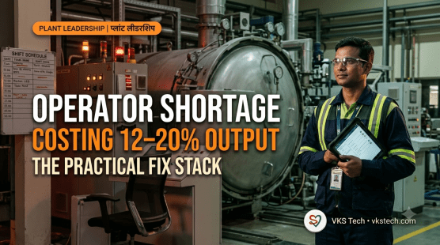
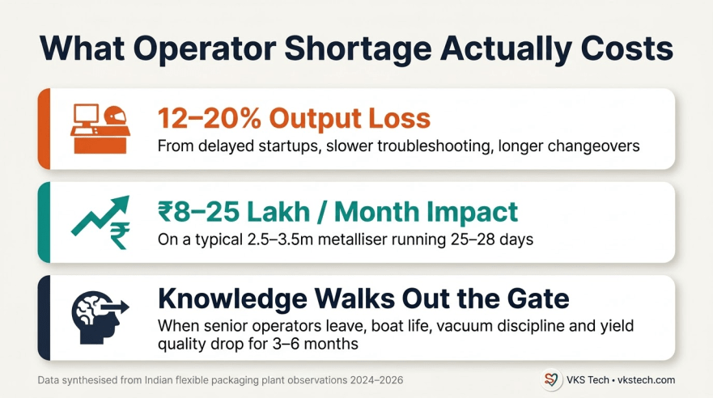
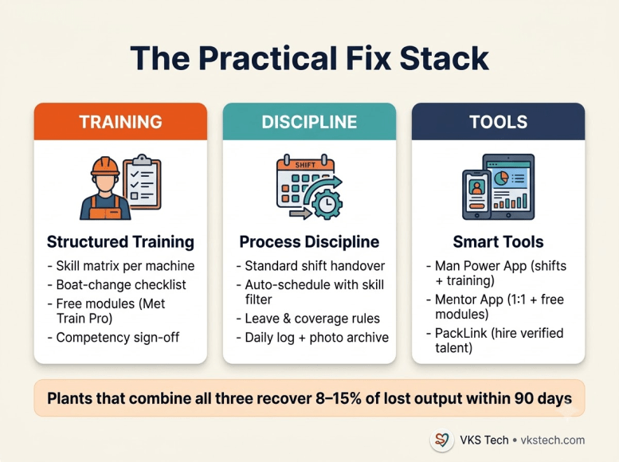

👷 Metallizer Operator Shortage is Costing Indian Plants 12–20% Output — The Practical Fix Stack
📖 14-min read | Plant Operations Guide | Bookmark for your next shift meeting
Walk into any Indian metalliser plant today and ask the production manager one question: “How many fully competent metallizer operators do you actually have?” Most will pause. Then they will give you a number that is lower than the number of shifts they run.
That gap is no longer a soft HR problem. It is a hard output and cost problem. Across plants I have worked with and observed, operator skill shortage and knowledge loss are quietly removing 12–20% of potential output through slower startups, longer troubleshooting, inconsistent boat performance, and higher scrap during changeovers.
This blog quantifies the real cost, explains why the shortage is structural, and gives you a practical three-part fix stack that plants can start implementing this week — using tools that already exist inside the VKS Tech ecosystem.
📉 What the Shortage Actually Looks Like on the Floor
The problem rarely shows up as “we have zero operators”. It shows up as:
- Delayed startups — new or partially trained operators take 25–40 minutes longer to stabilise vacuum, current and wire feed after a boat change.
- Inconsistent boat life — the same recipe that gave 12 hours last month suddenly drops to 9–10 hours because wire alignment or current discipline slipped.
- Longer troubleshooting — when OD drifts or spitting starts, the operator who knows the root-cause sequence is on weekly off or has left.
- Changeover quality drop — first 1–2 rolls after changeover show higher defects until a senior person intervenes.
- Knowledge walking out — when a 6–8 year metallizer operator resigns, the plant loses informal process knowledge that was never written down.
These are not theoretical. They compound. A plant that loses two senior operators in six months can easily see boat consumption rise 15–20% and yield drop 1–2 points until the new team stabilises — often 4–6 months later.

🔍 Why the Shortage is Structural (Not Just “Attrition”)
Three forces are working together:
- Experience is concentrated — Real metallizer competence (boat handling, vacuum intuition, wire behaviour, source cleaning judgement) still sits with a relatively small group of operators who learnt on the job over 5–10 years. Formal training pipelines are weak.
- New capacity is coming online — New metalliser lines and film plants continue to be commissioned. Demand for competent operators is rising faster than supply.
- Documentation is weak — Most plants still rely on tribal knowledge. Standard operating procedures exist on paper but are rarely used as living training tools with sign-off and competency tracking.
Result: every time a skilled operator leaves or goes on long leave, the plant pays a hidden tax for 3–6 months.
🛠️ The Practical Fix Stack (What Actually Works)
Plants that recover the lost output do three things together. Doing only one of them is not enough.

1. Structured Training (Competence, not just attendance)
Stop treating training as a one-time induction. Build a simple skill matrix for every critical metallizer task:
- Boat change sequence (including thermal discipline)
- Wire alignment and feed rate judgement
- Vacuum recovery and leak response
- Current / OD correlation and recipe discipline
- Source cleaning and boat seating
- Shift handover quality
Each operator should have a visible status: Learning → Practising under supervision → Competent → Can train others.
This is exactly where Man Power App becomes powerful. The training modules section + shift scheduling already exist. Adding a lightweight skill matrix and competency sign-off turns it from a roster tool into a competence system. Free modules inside Mentor App (especially Met Train Pro) can be assigned as structured learning and tracked.
2. Process Discipline (Make the good way the easy way)
Competence without daily discipline decays. The highest-leverage disciplines are:
- Standardised shift handover (what must be written / photographed)
- Boat-change checklist that is actually ticked (not remembered)
- Auto-schedule rules that prefer competent operators on the metalliser during critical windows
- Leave and coverage rules that protect minimum skilled headcount on every shift
Man Power already handles shift codes, auto-schedule, leave, and coverage validation. Plants that use these features seriously see fewer “we had no experienced person on night shift” incidents.
3. Smart Tools + Knowledge Capture
Two tools close the loop:
- Man Power App — Live skill visibility + roster discipline + training assignment.
- Mentor App by VKS Tech — Free plant modules (Met Train Pro, Time Study, Excel Expert, KPI) plus paid 1:1 sessions when a team needs deep process correction (boat life, yield, vacuum, changeover). Session recordings stay in the personal workspace so knowledge does not walk out again.
When you need to hire, PackLink gives you a members-only network of packaging professionals instead of relying only on generic job portals.
• Man Power → Daily roster, skill matrix, training tracking, coverage protection
• Mentor → Structured learning modules + 1:1 process coaching when the team is stuck
• PackLink → Hire verified packaging talent when internal pipeline is not enough
📅 30-Day Starter Plan Any Plant Can Run
Week 1
List every metallizer operator and mark current competence level on the 6–7 critical tasks. Identify the top 2 skill gaps that are costing the most output right now.
Week 2
Create or refine the boat-change and shift-handover checklists. Make them mandatory. Assign the relevant free Mentor modules to operators who are still in “Learning” or “Practising” status.
Week 3
Turn on skill-aware scheduling in Man Power (or manually protect skilled coverage if you are still on paper). Start logging every boat set removed with a quick photo and note — this becomes your training evidence.
Week 4
Review the first month’s data. Where did output or boat life improve? Where is the remaining gap? Book focused Mentor sessions only for the stubborn process issues.
Plants that run this 30-day cycle seriously usually recover a visible part of the 12–20% loss within 60–90 days. The rest comes from sustained discipline.
🎯 Key Takeaway
Want help setting up the skill matrix or assigning the right free modules? The Mentor App is built exactly for this. You can start with free plant modules today and book a focused 1:1 session only when you need it.
 Man Power" width="48" height="48" style="border-radius:10px;flex-shrink:0;"/>
Man Power" width="48" height="48" style="border-radius:10px;flex-shrink:0;"/>
 PackLink" width="48" height="48" style="border-radius:10px;flex-shrink:0;"/>
PackLink" width="48" height="48" style="border-radius:10px;flex-shrink:0;"/>
👷 मेटलाइज़र ऑपरेटर की कमी भारतीय प्लांट्स को 12–20% आउटपुट का नुकसान करा रही है — व्यावहारिक फिक्स स्टैक
📖 15-min read | प्लांट ऑपरेशन्स गाइड | अगली शिफ्ट मीटिंग के लिए बुकमार्क करें
आज किसी भी भारतीय मेटलाइज़र प्लांट में जाकर प्रोडक्शन मैनेजर से एक सवाल पूछिए: “आपके पास वास्तव में कितने पूरी तरह सक्षम मेटलाइज़र ऑपरेटर हैं?” ज्यादातर थोड़ा रुकेंगे। फिर जो संख्या बताएंगे वह उनके द्वारा चलाई जा रही शिफ्ट्स से कम होगी।
यह गैप अब सिर्फ HR की समस्या नहीं रह गई है। यह एक ठोस आउटपुट और कॉस्ट की समस्या बन चुकी है। जिन प्लांट्स में मैंने काम किया या देखा है, वहाँ ऑपरेटर स्किल की कमी और नॉलेज लॉस चुपचाप 12–20% संभावित आउटपुट हटा रहे हैं — धीमे स्टार्टअप, लंबे ट्रबलशूटिंग, असंगत बोट परफॉर्मेंस और चेंजओवर के दौरान ज्यादा स्क्रैप के रूप में।
यह ब्लॉग असली लागत बताता है, बताता है कि कमी क्यों संरचनात्मक है, और एक व्यावहारिक तीन-भाग वाला फिक्स स्टैक देता है जिसे प्लांट्स इस हफ्ते से शुरू कर सकते हैं — VKS Tech इकोसिस्टम के मौजूदा टूल्स का उपयोग करके।
📉 कमी फर्श पर वास्तव में कैसी दिखती है
समस्या शायद ही “हमारे पास शून्य ऑपरेटर हैं” के रूप में दिखती है। यह इस तरह दिखती है:
- देरी से स्टार्टअप — नए या आंशिक रूप से प्रशिक्षित ऑपरेटर बोट चेंज के बाद वैक्यूम, करंट और वायर फीड को स्थिर करने में 25–40 मिनट ज्यादा लेते हैं।
- असंगत बोट लाइफ — वही रेसिपी जो पिछले महीने 12 घंटे दे रही थी, अचानक 9–10 घंटे पर आ जाती है क्योंकि वायर अलाइनमेंट या करंट डिसिप्लिन ढीला पड़ गया।
- लंबा ट्रबलशूटिंग — जब OD ड्रिफ्ट होता है या स्पिटिंग शुरू होती है, तो जो ऑपरेटर रूट-कॉज सीक्वेंस जानता है वह वीकली ऑफ पर होता है या निकल चुका होता है।
- चेंजओवर क्वालिटी में गिरावट — चेंजओवर के बाद पहले 1–2 रोल में ज्यादा डिफेक्ट दिखते हैं जब तक कोई सीनियर व्यक्ति हस्तक्षेप नहीं करता।
- नॉलेज का बाहर जाना — जब 6–8 साल का मेटलाइज़र ऑपरेटर इस्तीफा देता है, तो प्लांट अनौपचारिक प्रोसेस नॉलेज खो देता है जो कभी लिखी नहीं गई थी।
🛠️ व्यावहारिक फिक्स स्टैक (जो वास्तव में काम करता है)
जो प्लांट्स खोए हुए आउटपुट को वापस पाते हैं वे तीन चीजें एक साथ करते हैं। सिर्फ एक करना काफी नहीं है।
1. संरचित प्रशिक्षण (सिर्फ उपस्थिति नहीं, क्षमता)
प्रशिक्षण को एक बार की इंडक्शन की तरह मानना बंद करें। हर महत्वपूर्ण मेटलाइज़र टास्क के लिए एक सरल स्किल मैट्रिक्स बनाएं:
- बोट चेंज सीक्वेंस (थर्मल डिसिप्लिन सहित)
- वायर अलाइनमेंट और फीड रेट जजमेंट
- वैक्यूम रिकवरी और लीक रिस्पॉन्स
- करंट / OD सहसंबंध और रेसिपी डिसिप्लिन
- सोर्स क्लीनिंग और बोट सीटिंग
- शिफ्ट हैंडओवर क्वालिटी
हर ऑपरेटर का दिखने वाला स्टेटस होना चाहिए: सीख रहा है → सुपरविजन में प्रैक्टिस → सक्षम → दूसरों को ट्रेन कर सकता है।
यहीं Man Power App शक्तिशाली बन जाता है। ट्रेनिंग मॉड्यूल्स सेक्शन + शिफ्ट शेड्यूलिंग पहले से मौजूद हैं। एक हल्का स्किल मैट्रिक्स और कंपिटेंसी साइन-ऑफ जोड़ने से यह सिर्फ रोस्टर टूल से क्षमता सिस्टम बन जाता है। Mentor App के अंदर फ्री मॉड्यूल्स (खासकर Met Train Pro) को संरचित लर्निंग के रूप में असाइन किया जा सकता है।
2. प्रोसेस डिसिप्लिन (अच्छे तरीके को आसान बनाएं)
दैनिक डिसिप्लिन के बिना क्षमता क्षीण हो जाती है। सबसे ज्यादा प्रभाव वाले डिसिप्लिन हैं:
- मानकीकृत शिफ्ट हैंडओवर
- बोट-चेंज चेकलिस्ट जो वास्तव में टिक की जाए
- ऑटो-शेड्यूल नियम जो महत्वपूर्ण विंडो में सक्षम ऑपरेटरों को प्राथमिकता दें
- लीव और कवरेज नियम जो हर शिफ्ट पर न्यूनतम स्किल्ड हेडकाउंट की रक्षा करें
Man Power पहले से शिफ्ट कोड्स, ऑटो-शेड्यूल, लीव और कवरेज वैलिडेशन हैंडल करता है।
3. स्मार्ट टूल्स + नॉलेज कैप्चर
- Man Power App — लाइव स्किल विजिबिलिटी + रोस्टर डिसिप्लिन + ट्रेनिंग असाइनमेंट
- Mentor App by VKS Tech — फ्री प्लांट मॉड्यूल्स + जब टीम को गहरी प्रोसेस करेक्शन की जरूरत हो तो पेड 1:1 सेशन
- PackLink — जब आंतरिक पाइपलाइन काफी न हो तो वेरिफाइड पैकेजिंग टैलेंट हायर करने के लिए
• Man Power → दैनिक रोस्टर, स्किल मैट्रिक्स, ट्रेनिंग ट्रैकिंग, कवरेज सुरक्षा
• Mentor → संरचित लर्निंग मॉड्यूल्स + 1:1 प्रोसेस कोचिंग
• PackLink → वेरिफाइड पैकेजिंग टैलेंट हायर करना
🎯 मुख्य निष्कर्ष
स्किल मैट्रिक्स सेटअप करने या सही फ्री मॉड्यूल्स असाइन करने में मदद चाहिए? Mentor App बिल्कुल इसी के लिए बना है। आप आज ही फ्री प्लांट मॉड्यूल्स से शुरू कर सकते हैं और जरूरत पड़ने पर ही फोकस्ड 1:1 सेशन बुक करें।
Man Power" width="48" height="48" style="border-radius:10px;flex-shrink:0;"/>
PackLink" width="48" height="48" style="border-radius:10px;flex-shrink:0;"/>